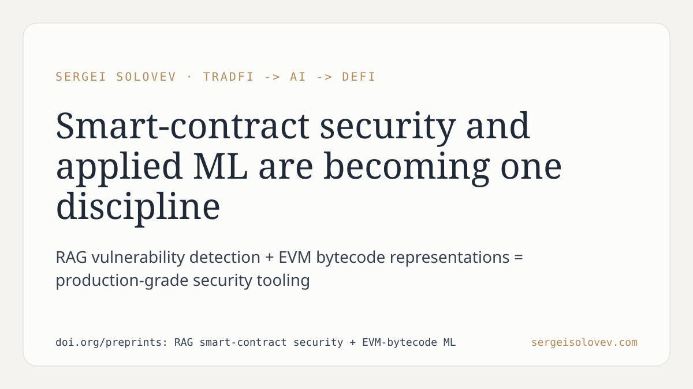

Smart-contract auditors and ML engineers have been solving adjacent problems in separate rooms for years. The auditor asks: is this bytecode exploitable? The ML engineer asks: what latent structure lives in this bytecode? The two questions share the same input but almost no shared literature.
The preprints I am releasing address this gap from two directions — retrieval-augmented generation applied to vulnerability detection, and learned representations of EVM bytecode — without treating them as separate research tracks. The underlying argument is that verifiability and adaptivity are not competing properties in on-chain economic systems; they are jointly necessary. A system that can detect novel attack patterns but cannot explain its reasoning to an auditor is commercially useless. A system that produces interpretable rules but cannot generalize beyond its training distribution fails in practice just as quickly.
What I find worth stating plainly: the convergence is not a research trend to watch. It is already the operational reality for any team building production-grade security tooling on EVM-compatible chains. The tooling that survives the next two years will be the tooling that handles both constraints simultaneously.
Full write-up and preprints: https://doi.org/preprints: RAG smart-contract security + EVM-bytecode ML
#SmartContracts #RAG #ML